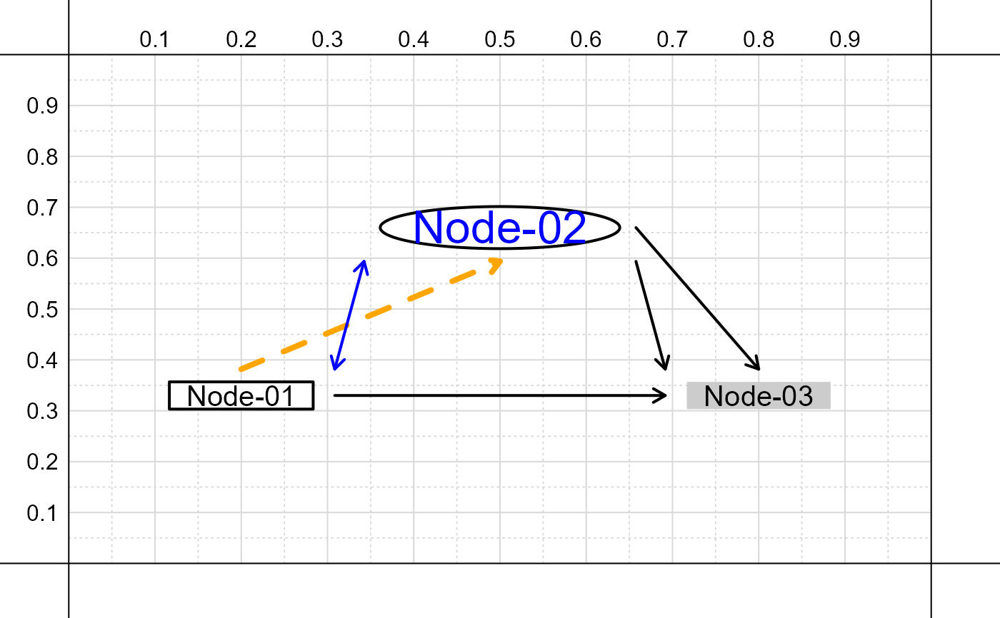

add_nodes.RdFunction to add multiple nodes (and associated paths) to an existing path diagram.
add_nodes( input, paths = NULL, output = F, shape = "box", shape.col = "white", shape.lwd = 2, shape.border = "black", shape.lty = 1, shape.pad = 0.5, shape.x = NA, shape.y = NA, text.size = 1.25, text.col = "black", text.spacing = NULL, path.pad = 0.025, path.lwd = 2, path.col = "black", path.length = 0.1, path.angle = 30, path.lty = 1, path.code = "->", xpd = NA, ignore_asterisk = TRUE, add = TRUE )
| input | A vector of labeled character strings; see details for more information. |
|---|---|
| paths | An optional vector of labeled character strings; see details for more information. |
| output | Logical; if |
| shape | The default shape for nodes, either 'box',
'circle', or 'blank'; options for individual nodes can be
specified with the tag |
| shape.col | The default color for nodes; options
for individual nodes can be specified with the tag |
| shape.lwd | The default line width for node borders;
options for individual nodes can be specified with the
tag |
| shape.border | The default border color for nodes;
options for individual nodes can be specified with the
tag |
| shape.lty | The default border line type for nodes;
options for individual nodes can be specified with the
tag |
| shape.pad | The default space between lines of text
for nodes; options for individual nodes can be specified
with the tag |
| shape.x | The default fixed width for nodes;
options for individual nodes can be specified with the
tag |
| shape.y | The default fixed height for nodes;
options for individual nodes can be specified with the
tag |
| text.size | The default size for text content;
options for individual nodes can be specified with the
tag |
| text.col | The default color for text content;
options for individual nodes can be specified with the
tag |
| text.spacing | The space between multiple lines of text;
options for individual nodes can be specified with the
tag |
| path.pad | The space between a line or arrow and a node;
options for individual nodes can be specified with the
tag |
| path.lwd | The default line width for paths;
options for individual nodes can be specified with the
tag |
| path.col | The default line color for paths;
options for individual nodes can be specified with the
tag |
| path.length | The default arrowhead length for paths;
options for individual nodes can be specified with the
tag |
| path.angle | The default angle of arrowheads for paths;
options for individual nodes can be specified with the
tag |
| path.lty | The default line type for paths;
options for individual nodes can be specified with the
tag |
| path.code | The default arrow direction for paths;
options for individual nodes can be specified with the
tag |
| ignore_asterisk | Logical; if |
| add | Logical; if |
Each node is specified via a text string in the format:
"Text content|x=value|y=value|..."
substituting value with the respective x and
y-axis coordinate positions for the node, and ...
referring to additional options controlling node
aesthetics.
Options are specified as a tag followed by a value; for
example, to draw a node as an ellipse, one uses the
combined tag and value: ns=circle. Multiple
options can be specified by separating them with the
| symbol.
Paths (lines or arrows) can be drawn between existing nodes whose string input is labeled, via the format:
"Label|coordinate|Label|coordinate|..."
where Label is the label in the string
vector (i.e., the name attribute), and coordinate
is one of eight values: bottom, left,
top, right, bottomleft, topleft,
topright, or bottomright.
As before, additional aesthetic options can be specified
via a tag and value, with multiple cases separated by the
| symbol. For example, the width of a path line
can be set via the tag and value: lt=2.
# Define vector of string inputs for nodes to draw input = c( # [Node label] = "Text|x=value|y=value|..." N01 = 'Node-01|x=.2|y=.33', # Set node shape to ellipse; resize and color text N02 = 'Node-02|x=.5|y=.66|ns=circle|ts=2|tc=blue', # Color node and remove border N03 = 'Node-03|x=.8|y=.33|nc=grey80|nb=NA' ) # Define vector of string inputs to draw paths # between labeled nodes specified in 'input' paths = c( # Start of path End of path Options # Label|coordinate|Label|coordinate|... 'N01|right|N03|left', # Connect various nodes and coordinates 'N02|right|N03|top', 'N02|bottomright|N03|topleft', # Orange dashed thick line 'N01|top|N02|bottom|lc=orange|lt=2|lw=4', # Blue double-headed arrow with small arrowhead 'N01|topright|N02|bottomleft|lc=blue|ll=.1|cd=<->' ) # Create empty figure create_base_figure()# Add nodes and paths add_nodes( input, paths = paths )